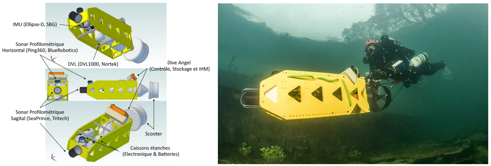
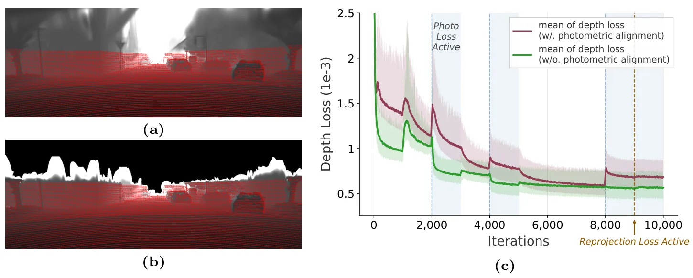
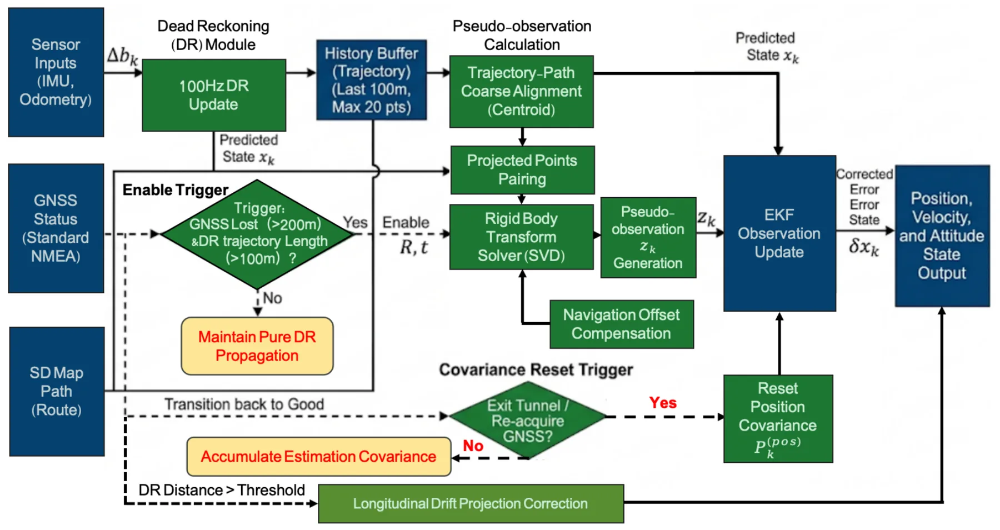
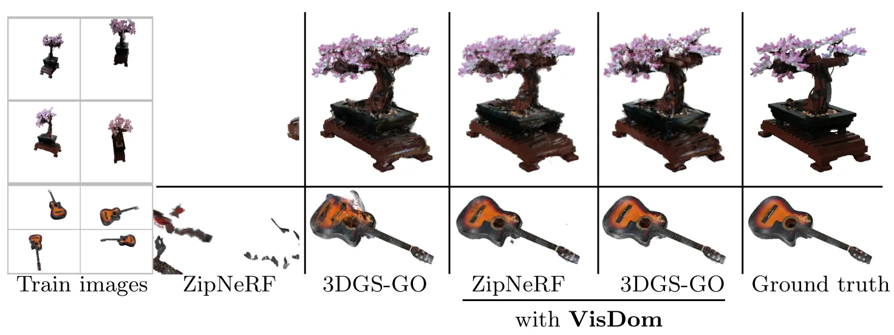

新论文 · 日期 2026-06-19 · score 20 · cs.RO
作者：Shikuan Shi, Chunran Zheng, Jiaming Xu, Tianyong Ye
评分 9.4/10
LiDAR-惯性-热红外3D Gaussian Splatting多传感器 SLAM光照鲁棒建图点到平面约束
一句话工作总结：LIT-GS 把 LiDAR 平面几何、惯性和热红外引入 3DGS 建图，用 point-to-plane BA 与平面正则化 splatting 提升弱光/低纹理场景的结构稳定性。
Gaussian Splatting 已支持实时神经渲染，但现有 LiDAR-惯性-视觉（LIV）Gaussian mapping 流水线仍依赖 RGB 光度线索，在光照变化和低纹理场景下容易失效。本文提出 LIT-GS，一个 LiDAR-惯性-热红外 Gaussian Splatting 框架，在位姿/结构 refinement 与 Gaussian 优化中显式注入 LiDAR 平面几何约束。方法用 LIV 视觉…
Gaussian Splatting has enabled real-time neural rendering, yet existing LiDAR-inertial-visual (LIV) Gaussian mapping pipelines remain fragile under illumination changes and texture-deficient scenes due to thei…

新论文 · 日期 2026-06-18 · score 17 · cs.RO, cs.CV
作者：Fan Zhu, Ziyu Chen, Peichen Liu, Yifan Zhao
评分 9.1/10
Visual SLAM3DGS-SLAMAtlanta World点线融合结构先验
一句话工作总结：MMD-SLAM 将点线融合、Atlanta World 结构先验和 Multi-Meta Gaussian 表示结合，用结构化 3DGS 地图同时提升跟踪和渲染。
3D Gaussian Splatting 推动了新视角合成和高保真场景重建，也扩展了 3DGS-based Visual SLAM 的潜力。但多数现有系统未充分利用底层结构信息，限制了渲染质量并导致地图不一致。本文提出 MMD-SLAM，一个结构增强的 Visual SLAM 框架，利用 Atlanta World 假设引导 Multi-Meta Gaussian 表示进行逼真建图。首先，作者引入点-线融合 po…
3D Gaussian Splatting (3DGS) has significantly boosted novel view synthesis and high-fidelity scene reconstruction, expanding the potential of 3DGS-based Visual Simultaneous Localization and Mapping (SLAM) met…

新论文 · 日期 2026-06-18 · score 12 · cs.RO
作者：Georgios Evangelos Margaritis, Lionel Lapierre, Simon Rohou, Zhi Yan
评分 8/10
水下三维重建旋转声呐Continuous-time SLAMMesh Reconstruction地下空间
一句话工作总结：该工作用 continuous-time SLAM 修正旋转声呐轨迹漂移，再用两阶段深度表面重建生成水下喀斯特管道 3D mesh。
喀斯特含水层是重要淡水资源，但其地下几何复杂且认知不足，带来显著风险。由于水下探索得到的声呐数据稀疏且噪声较大，同时导航估计存在漂移，标准三维重建方法很难直接应用。本文提出一个从 sonar profiler 重建水下喀斯特管道的流水线：先用 continuous-time SLAM 修正轨迹漂移，再结合新的两阶段深度学习表面重建方法，生成可沉浸浏览和导航的三维 mesh，用于水文地质分析。
Karst aquifers provide critical freshwater resources but pose significant hazards due to their complex and poorly understood subsurface geometry. Mapping these environments is challenging because sonar data fr…

新论文 · 日期 2026-06-18 · score 10 · cs.CV
作者：Kyoleen Kwak, Daeho Kim, Jeong Woon Lee, Hyoseok Hwang
评分 8.7/10
LiDAR-Camera CalibrationTargetless Calibration3D Gaussian Splatting外参标定几何保持
一句话工作总结：该方法把 3DGS 用作 LiDAR-camera targetless calibration 的可微代理，同时用多视角 LiDAR 深度监督和 photometric gradient blocking 保持真实几何。
准确 LiDAR-camera calibration 是鲁棒多模态感知的基础。Targetless 方法避免了人工靶标，但受限于跨模态判别特征稀缺。近期方法通过在可微模型中重建场景，使外参优化可由密集光度监督驱动；其中 3D Gaussian Splatting 常被用作连接 LiDAR 与相机的几何代理。但 3DGS 原本为新视角合成设计，已有方法倾向优先优化渲染质量，导致代理几何偏离真实 LiDAR 结构。本…
Accurate LiDAR-camera calibration is essential for robust multi-modal perception. Targetless approaches avoid manual setup but remain limited by the scarcity of discriminative cross-modal features. Recent meth…

新论文 · 日期 2026-06-18 · score 7 · cs.CV
作者：Ivan De Boi, Xinxing Shi, Xiaoyu Jiang, Tim J. M. Jaspers
评分 6.4/10
内窥镜视频Gaussian Process PriorVAE视频恢复视觉里程计前端
一句话工作总结：GPVAE 用时间 GP 先验恢复内窥镜视频并输出不确定性，摘要显示可降低下游 VO/PoseNet 轨迹误差。
内窥镜视频分析对胃肠诊断和计算机辅助手术至关重要，但视频序列经常受到高光反射、运动伪影和缺帧影响。这些瞬态退化会干扰医生判断，并破坏三维重建、导航等下游任务。本文提出 Gaussian Process Prior Variational Autoencoder（GPVAE），用时间 Gaussian process prior 替代标准 factorized latent prior，从而进行带不确定性的缺帧插值和…
Endoscopic video analysis is essential for gastrointestinal diagnosis and computer-assisted interventions, but video sequences are routinely degraded by specular reflections, motion artifacts, and missing fram…

新论文 · 日期 2026-06-18 · score 7 · cs.RO
作者：Jingzhi Cui, Chao Zhang, Yuliang Mao, Shaolin Lü
评分 8.6/10
GNSS 退化MEMS/GNSSEKFHD Map Route ConstraintUGV 定位
一句话工作总结：该方法把 HD map 任务路线与 dead-reckoning 轨迹匹配，生成伪位置观测注入 EKF，以抑制隧道等 GNSS outage 下 UGV 的 MEMS/GNSS 漂移。
为解决结构化道路环境中无人地面车在严重 GNSS 信号遮挡下的累积定位漂移，本文提出鲁棒路线约束状态估计方法。在无卫星信号期间，方法建立历史 dead reckoning 轨迹与高清地图中 mission route 局部线段的对应关系，并通过二维刚体变换估计 route-referenced position。该估计位置随后作为伪位置观测注入 Extended Kalman Filter update。这样，道路…
To address cumulative localization drift of unmanned ground vehicles in structured road environments under severe Global Navigation Satellite System signal occlusion, this paper proposes a robust route-constra…

新论文 · 日期 2026-06-19 · score 4 · cs.CV
作者：Mariia Gladkova*, Tarun Yenamandra*, Edmond Boyer, Robert Maier
评分 6.9/10
Sparse-view NVSVisible DomainVisual HullGaussian Splatting三维重建
一句话工作总结：VisDom 在 visual hull 上加入“至少 K 个视角可见”的几何约束，指导 NeRF 采样和 GS 放置，缓解稀疏视角重建伪影。
Sparse novel view synthesis 由于需要从少量输入视图恢复三维几何而非常困难。NeRF 与 Gaussian Splatting 方法在 dense supervision 下表现良好，但在稀疏设置中容易过拟合，产生漂浮伪影和不一致几何。Silhouette consistency 常用作正则，但仍不足，因为满足 silhouette 的区域可能延伸到真实物体之外。本文提出 VisDom，一…
Sparse novel view synthesis (NVS) remains challenging due to the ambiguity of recovering 3D geometry from few input views. While NeRF- and Gaussian Splatting (GS)-based methods perform well with dense supervis…

新论文 · 日期 2026-06-18 · score 4 · cs.CV
作者：Jiayu Tang, Yuchen Zhou, Chao Gou
评分 5.8/10
MLLM3D Spatial AwarenessDepthCamera PosePoint Cloud
一句话工作总结：SpatialSV 用 depth、camera pose 和 point cloud 等任务监督训练 MLLM 的 2D-to-3D lifting，使其空间表示更可解释。
解锁 multimodal large language model（MLLM）的空间智能，是理解和交互三维世界的关键。现有方法通常通过外部工具注入空间先验，带来显著推理开销；或依赖 latent feature distillation，但难以解释且缺少细粒度几何约束。本文提出 SpatialSV，旨在把鲁棒三维空间意识内化到 MLLM 中，同时提供内在可解释性。不同于被动特征模仿，SpatialSV 使用任务导…
Unlocking the spatial intelligence of multimodal large language model (MLLMs) is crucial for understanding and interacting with the 3D world. Prevailing approaches typically inject spatial priors via external…